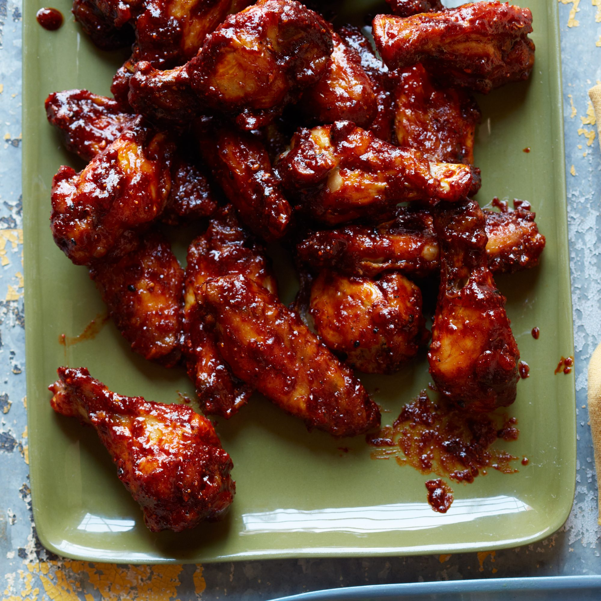

Description
These Korean-style air-fried wings are crispy, sticky and spicy. Cooked in an air fryer they are ready in less than 30 minutes. They are perfect as an appetizer or add some rice and veggies on the side and you have a balanced meal.
Ingredients
Sauce:
- ¼ cup hot honey (such as Mike's Hot Honey®)
- 3 tablespoons gochujang (Korean hot pepper paste)
- 1 tablespoon brown sugar
- 1 tablespoon soy sauce
- 1 teaspoon lemon juice
- 2 teaspoons minced garlic
- 1 teaspoon minced fresh ginger root
- ½ teaspoon salt
- ¼ teaspoon black pepper
- ¼ cup finely chopped green onions (green part only)
Wings:
- 2 pounds chicken wings
- 1 teaspoon salt
- 1 teaspoon garlic powder
- 1 teaspoon onion powder
- ½ teaspoon black pepper
- ½ cup cornstarch
Garnish:
- 2 tablespoons chopped green onions
- 1 teaspoon sesame seeds
Steps
- Step - 1:
Combine hot honey, gochujang, brown sugar, soy sauce, lemon juice, garlic, ginger, salt, and black pepper in a saucepan. Bring sauce to a boil over medium heat, reduce heat, and simmer for 5 minutes. Add green onions and stir.
- Step - 2:
Preheat air fryer to 400 degrees F (200 degrees C).
- Step - 3:
Place wings in a large bowl and toss with salt, garlic powder, onion powder and black pepper. Add cornstarch and toss wings until fully coated. Shake each wing and place in the air fryer basket, making sure they are not touching; cook in batches if necessary.
- Step - 4:
Fry in the preheated air fryer for 10 minutes, shake basket, and fry an additional 10 minutes. Flip wings over and fry until chicken is cooked through and juices run clear, 7 to 8 more minutes.
- Step - 5:
Dip each wing in the sauce and garnish with chopped green onions and sesame seeds. Serve with remaining sauce on the side.